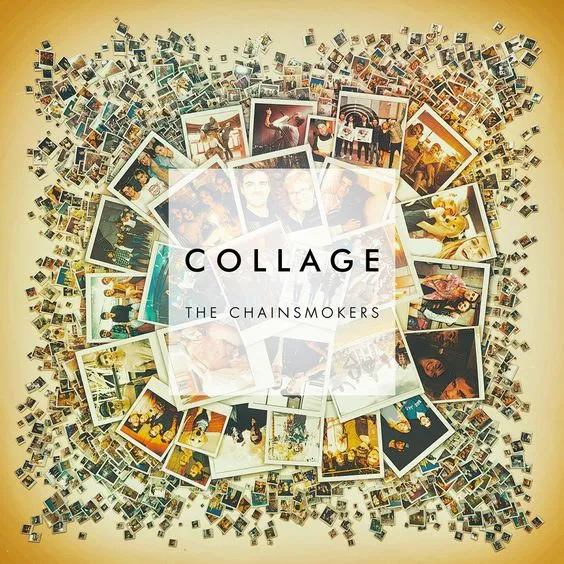

Collage
"Don't Let Me Down" was released as the lead single on February 5, 2016. The song features American singer Daya and peaked at number three on the US Billboard Hot 100, and became the duo's second top ten single, the first being "Roses". "Inside Out", featuring Swedish singer Charlee Nyman, was released as the second single on April 1, 2016. Since its release, it has peaked at number 13 on the US Hot Dance/Electronic Songs chart. "Closer", featuring singer Halsey, was released as the third single on July 29, 2016. The song entered the Billboard Hot 100 at number nine; it became the Chainsmokers' third top ten single. Two weeks later, the song peaked atop the chart. It was both the Chainsmokers' and Halsey's first number one single, topping the chart for twelve consecutive weeks, becoming the longest-running number-one single in 2016 in the US. "All We Know", which features Phoebe Ryan, was released as the fourth single from the EP on September 29, 2016. It was dubbed by some critics as "a sequel to 'Closer'". The song peaked at number 18 on the Billboard Hot 100. "Setting Fires" was released as a single the same day of the release of the EP. The song features the vocals of American electronic music duo XYLO. It peaked at number 71 on the Billboard Hot 100 chart.
 CLOSER - FT. HALSEY
CLOSER - FT. HALSEY INSIDE OUT - FT. CHARLEE
INSIDE OUT - FT. CHARLEE DON'T LET ME
DOWN - FT. DAYA
DON'T LET ME
DOWN - FT. DAYA